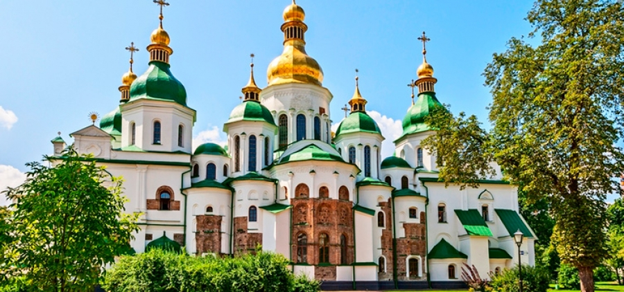

Софійський собор (Київ)
Видатний пам'ятник давньоруської архітектури, розташований у центрі Києва.
Путівник по вибраним красивим місцям України
Видатний пам'ятник давньоруської архітектури, розташований у центрі Києва.
Один із найважливіших православних монастирів Східної Європи, зі стародавніми печерами.
Середньовічна фортеця на каньйоні річки Смотрич, популярна туристична атракція.

Велична споруда у центрі Львова, відома своєю архітектурою та культурним життям.
Сильна середньовічна фортеця на правому березі Дністра зі значною історією.